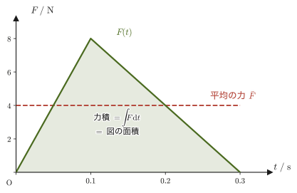

第2章ニュートンの運動の法則 — 運動量と角運動量
高校物理では，運動方程式を $ma=F$ という，向きを考えなくてよいスカラーの式として学んだ人が多いだろう．しかし物体は一直線上だけでなく平面上や空間内を動き，力も向きを持つ．そこで第1章では，位置・速度・加速度を太字のベクトル $\bm{r},\bm{v}=\dot{\bm r},\bm{a}=\ddot{\bm r}$ として扱い直した．この章では，その道具を使ってニュートン（Newton）が『プリンキピア』で提示した運動の3つの法則を，ベクトル方程式 $\bm F=m\ddot{\bm r}$ を出発点にもう一度書き直す．
まず気づくのは，「力が無ければ物体は静止か等速直線運動を続ける」という第1法則が，実は第2法則から数学的に導けてしまうという事実である．それなのになぜニュートンはこれをわざわざ独立した法則として述べたのか——そこには「宇宙のどこかに慣性系が存在する」という，力学全体の土台にかかわる深い主張が隠れている．
次に，運動方程式を $\bm F=m\ddot{\bm r}$ ではなく運動量 $\bm p=m\dot{\bm r}$ を使って $\bm F=\dd\bm p/\dd t$ と書き直すと，質量が変化する物体（雨粒がその例である）を考えるときの出発点になり，さらに力を時間で積分した「力積」という量が自然に現れる．第3法則（作用・反作用の法則）と組み合わせると，外力を受けない2つの物体の運動量の和がつねに一定に保たれるという，力学でもっとも重要な保存則の1つ——運動量保存則——が導かれる．
最後に，運動方程式の両辺に位置ベクトルとの外積（がいせき，ベクトル積）をとるという操作を行うと，「回転」を扱うための量である力のモーメントと角運動量が現れ，回転の運動方程式 $\bm N=\dd\bm L/\dd t$ が得られる．
章の終わりには，運動量保存則の応用として衝突現象を取り上げ，弾性衝突・非弾性衝突という2つの極端な場合を「反発係数」という量を使って統一的に扱う．
- 運動の第1法則が第2法則 $m\ddot{\bm r}=\bm 0$ から数学的に導けること，それでもなお独立した法則として述べる意味（慣性系の存在）
- 運動量 $\bm p=m\dot{\bm r}$ を使った運動方程式 $\bm F=\dd\bm p/\dd t$ の書き方と，質量が変化する系（雨滴）の扱い方（取り込まれる物質の運動量まで含めて考える）
- 力積の定義 $\int_{t_1}^{t_2}\bm F\,\dd t$ と，運動量原理 $\bm p(t_1)+\int_{t_1}^{t_2}\bm F\,\dd t=\bm p(t_2)$ の導出
- 第3法則（作用・反作用の法則）$\bm F_{AB}=-\bm F_{BA}$ と，内力・外力の区別
- 2体系の運動量保存則の証明と，$N$ 個の質点からなる系への一般化
- 力のモーメント $\bm N=\bm r\times\bm F$ と角運動量 $\bm L=\bm r\times\bm p$，回転の運動方程式 $\bm N=\dd\bm L/\dd t$ の導出
- （発展）反発係数を使った1次元衝突（弾性衝突・非弾性衝突）の扱い方と，衝突で失われる運動エネルギーの公式
もとにしたノート：望月泰英『物理学ノート 力学』 pp. 1–4．
2.1 運動の第1法則と慣性系
高校物理で最初に習う運動の法則は，「物体に力がはたらいていなければ，物体は静止し続けるか，等速直線運動を続ける」という慣性の法則（law of inertia）だった．これがニュートンの運動の第1法則である．
法則2.1 運動の第1法則（慣性の法則）
物体に外力（がいりょく，物体の外部からはたらく力）が作用しないかぎり，その物体は静止し続けるか，または等速直線運動（速さと向きが変わらない直線運動）を続ける．
ここで「外力が作用しない」には，力がまったくはたらかない場合のほか，いくつかの力がはたらいていてもそれらの合力が $\bm 0$（つり合っている）場合も含める．これは高校物理の「力がはたらかないか，はたらいていてもつり合っているとき」と同じ内容である．
この法則には，実は少し不思議な点がある．2.2節で見る第2法則（運動方程式）$\bm F=m\ddot{\bm r}$ を認めてしまえば，第1法則はその特別な場合（$\bm F=\bm 0$ の場合）として自動的に導かれてしまうのである．導いてみよう．
導出：第2法則から第1法則を導く
話を簡単にするため，質点が1本の直線（$x$ 軸）上だけを動く場合を考える．質量 $m$ の質点に外力がはたらかない（$F=0$）とすると，運動方程式 $m\ddot x=F$ は
$$ m\ddot x=0 $$となる．$m\neq0$ なので両辺を $m$ で割ってよく，$\ddot x=0$．これは「速度 $\dot x(t)$ を時刻 $t$ でもう1回微分すると恒等的に0になる」という意味だから，$\dot x(t)$ は時刻 $t$ によらない定数でなければならない（導関数が恒等的に0である関数は定数である，という微分の基本的な事実による．この事実は平均値の定理から示される，大学数学 第2章 2.3．もし $\dot x(t)$ が $t$ とともに変化する部分を持っていたら，それを微分した $\ddot x(t)$ はどこかで0でない値を取ってしまう，と考えてもよい）．そこで，この定数を $C_1$ とおくと，
$$ \dot x(t)=C_1\qquad(C_1：定数) $$が得られる．あとは $C_1$ の値で場合分けするだけである．
(i) $C_1=v_0\neq0$ のとき．$\dot x(t)=v_0$ は「速度がつねに一定値 $v_0$（初速度）である」ということなので，これをもう一度 $t$ で積分すると（積分定数を，時刻 $t=0$ で原点にいたとして $x(0)=0$ となるように選ぶと），
$$ x(t)=v_0t $$となる．これは，質点が速さ $\abs{v_0}$ で，$v_0$ の符号が表す向きに等速直線運動を続けることを表す．
(ii) $C_1=0$ のとき．$\dot x(t)=0$ をもう一度積分すると（同じく $x(0)=0$ とすると）$x(t)=0$ となり，質点はずっと原点に静止し続ける．
3次元の場合．質点が空間の中を動く一般の場合も，運動方程式 $m\ddot{\bm r}=\bm 0$ を成分ごとに $m\ddot x=0,\ m\ddot y=0,\ m\ddot z=0$ と読めば，各成分について上とまったく同じ議論ができる．すなわち速度ベクトルは時間によらない定数ベクトル $\dot{\bm r}(t)=\bm v_0$ となり，もう一度積分して $\bm r(t)=\bm r(0)+\bm v_0t$ が得られる．$\bm v_0\neq\bm 0$ なら向きも速さも変わらない直線運動，$\bm v_0=\bm 0$ なら静止である．
（導出終わり）
(i)・(ii) と3次元への拡張をあわせると，外力がはたらかない質点は「静止し続けるか，等速直線運動を続けるか」のどちらかしかない——これはまさに法則2.1（第1法則）そのものである．
考察：導けるのに，なぜ独立した法則として述べるのか
「第1法則は第2法則の特別な場合にすぎないのだから，わざわざ独立に述べる必要はないのではないか」と考える人もいる．しかし，この法則にはもっと深い意味が込められている．運動方程式 $\bm F=m\ddot{\bm r}$ の左辺の「力」や右辺の「加速度」は，そもそもどの観測者（どの座標系）から見た運動かを決めないと意味を持たない．たとえば急ブレーキをかけている電車の中に立っている人から見ると，なめらかな（摩擦の無視できる）座席や床に置いた荷物は水平方向には何の力も受けていないのに，突然前へすべり出すように見える——電車の中で運動方程式 $\bm F=m\ddot{\bm r}$（力がなければ加速度もゼロ）を素朴に適用すると，矛盾してしまうのである．
そこで第1法則は，「そのような矛盾が起きない特別な観測者（座標系）が，少なくとも1つは宇宙のどこかに存在する」ということを主張していると読むことができる．そのような特別な座標系を慣性系（inertial frame of reference）とよぶ．また，1つの慣性系が見つかれば，それに対して一定の速度で動いている座標系（たとえば一定の速さで直線上を走る電車）もすべて慣性系になる．ニュートン力学は，このような慣性系の存在を前提として初めて意味を持つ理論であり，第1法則はいわば「これから運動方程式を使って議論をする舞台（慣性系）が存在する」という，理論全体の土台を宣言する法則なのである．電車のように加速している観測者（非慣性系）から見た運動の記述は，慣性系とは異なる工夫（見かけの力）が必要になる——この点は第9章（回転座標系と慣性力）で詳しく扱う．
例題2.1 非慣性系で第1法則が破れて見える理由
まっすぐな水平の線路の上を走る電車が，一定の加速度 $\bm a_0$（進行方向と逆向き，つまりブレーキによる減速の向き）で減速している．電車の中のなめらかな座席（摩擦は無視できる）の上に荷物が置かれている．荷物には重力と垂直抗力がはたらくが両者はつり合っており，水平方向の力は $\bm 0$ である．電車の中の観測者（電車と一緒に動いている観測者）から見ると，この荷物はどのように動いて見えるか．また，それは第1法則（法則2.1）と矛盾するか，説明せよ．
解答 地面に対して静止している観測者（地球の自転などは無視して，地面を近似的に慣性系とみなす）から見ると，荷物には水平方向の力がはたらいていないので，法則2.1どおり荷物は等速直線運動（もともと電車と同じ速度で動いていたので，それを保ったまま）を続ける．すなわち地面から見た荷物の加速度は $\ddot{\bm r}=\bm 0$ である．
電車の位置ベクトルを $\bm r_{\text{電}}$ とすると，電車は加速度 $\ddot{\bm r}_{\text{電}}=\bm a_0$ で動いている．電車の中の観測者から見た荷物の位置は $\bm r'=\bm r-\bm r_{\text{電}}$ なので，これを時間で2回微分すると
$$ \ddot{\bm r}'=\ddot{\bm r}-\ddot{\bm r}_{\text{電}}=\bm 0-\bm a_0=-\bm a_0 $$となる．つまり電車の中の観測者には，荷物が加速度 $-\bm a_0$（$\bm a_0$ と逆向き，すなわち電車の進行方向の前向き）で，前へすべり出すように見える．荷物には実際には水平方向の力がはたらいていないのに，電車の中から見ると荷物は加速度運動をしているのだから，電車の中の観測者にとっては「力がないのに加速度が生じる」という，運動方程式 $\bm F=m\ddot{\bm r}$（したがって第1法則）が成り立たないように見えることになる．
これは物理法則そのものが壊れたのではなく，電車の中という観測者（加速度運動をしている非慣性系）を基準に選んだために，慣性系を前提とする第1法則がそのままの形では通用しなくなっただけである．地面のような慣性系を基準に選び直せば，法則2.1は矛盾なく成り立つ．非慣性系でどうしても運動方程式を使いたい場合には，実際には存在しない「見かけの力」（慣性力）$-m\bm a_0$ を付け加えて $m\ddot{\bm r}'=\bm F+(-m\bm a_0)$（いまは $\bm F=\bm 0$）とすれば，荷物の加速度 $-\bm a_0$ が説明できる．その扱いは第9章で学ぶ．
2.2 運動の第2法則 — 運動方程式と運動量・力積
高校物理では，運動方程式を $ma=F$（大きさだけの関係）や，せいぜい $x$ 成分・$y$ 成分に分けた形で学んだはずである．大学の力学では最初からベクトルのまま，
法則2.2 運動の第2法則（運動方程式）
物体に外力 $\bm F$（複数の力がはたらくときはその合力）が作用すると，物体には $\bm F$ に比例し，$\bm F$ と同じ向きの加速度 $\ddot{\bm r}$ が生じる．すなわち，
\begin{equation} \bm F=m\ddot{\bm r}\qquad(m：物体の質量\ [\mathrm{kg}]) \label{eq:2-second-law-ma} \end{equation}である．
と書く．$\bm F=m\ddot{\bm r}$ は，力 $\bm F$ と加速度 $\ddot{\bm r}$ が比例するという意味で高校物理の $F=ma$ と中身は同じだが，太字のベクトルで書くことで，力と加速度が「同じ向き」を持つことまで一つの式で表せている．
定義2.1 運動量
質量 $m$，速度 $\bm v=\dot{\bm r}$ の物体に対して，
\begin{equation} \bm p\equiv m\dot{\bm r} \label{eq:2-momentum-def} \end{equation}を，その物体の運動量（momentum）とよぶ（$\equiv$ は，左辺を右辺で「定義する」ことを表す記号である）．運動量の単位は $[\mathrm{kg\,m/s}]$（$=[\mathrm{N\,s}]$）である．
運動量を使うと，質量 $m$ が時間的に一定（$\dot m=0$）である場合には，積の微分公式（大学数学 第3章 3.2）より $\dd\bm p/\dd t=\dd(m\dot{\bm r})/\dd t=m\ddot{\bm r}+\dot m\dot{\bm r}=m\ddot{\bm r}$（$\dot m=0$ の項が消える）となるので，式 \eqref{eq:2-second-law-ma} は次のように書き直せる：
\begin{equation} \bm F=\frac{\dd}{\dd t}\bm p \label{eq:2-second-law-p} \end{equation}「物体の運動量の変化率は，その物体に作用する外力（合力）に等しい」——これは，式 \eqref{eq:2-second-law-ma} と数学的には同じ内容を，別の言葉で言い換えただけの式である（質量一定のとき）．
イメージ：ニュートンはなぜ $\bm F=\dd\bm p/\dd t$ の形で法則を述べたか
ニュートン自身は『プリンキピア』で，運動の変化（運動量の変化）が加えられた力に比例する，という形で第2法則を述べた．つまり $\bm F=m\ddot{\bm r}$ よりも，運動量を使った $\bm F=\dd\bm p/\dd t=\dd(m\dot{\bm r})/\dd t$ の形のほうが，もとの言い方に近い．この形を出発点にする利点は大きく2つ考えられる．
1つ目は，質量 $m$ が時間的に一定でない物体があるからである．たとえば，大気中を落下する小さな雨滴は，まわりの水蒸気を集めながら落下するため，質量が時間とともに増えていく．このような系では $\bm F=m\ddot{\bm r}$（$m$ を微分の外に出した形）をそのまま使うことはできず，質量の変化まで含めて運動量を考えることが出発点になる——ただし，$\bm F=\dd(m\dot{\bm r})/\dd t$ という形がそのまま成り立つのは，取り込まれる物質が使っている慣性系で静止している場合などに限られる．具体的な扱いと注意は例題2.2で確認する．
2つ目は，運動量そのものが運動の記述にとても重要な量だからである．次に見るように，運動量を主役にすると「力積」という考え方が自然に出てきて，衝突のように力が複雑に変化する現象でも，力積＝運動量の変化なら加速度の時間変化を追わずに扱える（2.2節後半，2.6節）．さらに2.4節で学ぶ運動量保存則にもつながっていく．運動量は，単に $\bm F=m\ddot{\bm r}$ の書き換えにとどまらない，独立した重要性を持つ物理量なのである．
例題2.2 質量が変化する物体の運動方程式（雨滴）
雨滴が，地面に対して静止している水蒸気を集めながら鉛直に落下しており，時刻 $t$ における雨滴の質量 $m(t)$ が増加し続けているとする．空気抵抗は無視し，雨滴にはたらく力は重力 $mg$ だけとして，鉛直下向きを正の向きにとる．(1) 短い時間 $\Delta t$ での運動量の変化を数えて，雨滴の運動方程式を求めよ．(2) $\bm F=\dfrac{\dd}{\dd t}(m\bm v)$ と $\bm F=m\dfrac{\dd\bm v}{\dd t}$（$=m\bm a$）のどちらを使うべきか答えよ．(3) 雨滴の質量が一定の割合 $\mu=\dot m$（$\mu\gt0$）で増えるとき，時刻 $t=0$ の質量を $m_0$，速さを $v_0$ として，速さ $v(t)$ を求めよ．
解答 (1) 時刻 $t$ に質量 $m$，速さ $v$ の雨滴と，これから $\Delta t$ の間に雨滴に取り込まれる質量 $\Delta m$ の水蒸気を1つの系と考える．水蒸気は地面に対して静止しているので，時刻 $t$ にこの系がもつ運動量は $mv+\Delta m\cdot0=mv$ である．時刻 $t+\Delta t$ には水蒸気は雨滴に取り込まれていて，質量 $m+\Delta m$，速さ $v+\Delta v$ の1つの物体なので，運動量は $(m+\Delta m)(v+\Delta v)$ である．したがって $\Delta t$ の間の運動量の変化は
$$ (m+\Delta m)(v+\Delta v)-mv=m\,\Delta v+v\,\Delta m+\Delta m\,\Delta v\approx m\,\Delta v+v\,\Delta m $$である（$\Delta m\,\Delta v$ は小さい量どうしの積で，$\Delta t\to0$ の極限では他の項に比べて無視できる）．この系にはたらく外力は重力 $mg$ で，運動量の変化は力積 $mg\,\Delta t$ に等しい（定理2.1）：
$$ m\,\Delta v+v\,\Delta m=mg\,\Delta t $$両辺を $\Delta t$ で割って $\Delta t\to0$ の極限をとると，$\Delta v/\Delta t\to\dot v=a$，$\Delta m/\Delta t\to\dot m$ より
$$ m\dot v+\dot m\,v=mg,\qquad\text{すなわち}\qquad \frac{\dd}{\dd t}(mv)=mg $$となる（左辺は積の微分公式，大学数学 第3章 3.2，$\dfrac{\dd}{\dd t}(mv)=\dot mv+m\dot v$ そのものである）．
(2) 正しいのは $\bm F=\dfrac{\dd}{\dd t}(m\bm v)$（式 \eqref{eq:2-second-law-p}）のほうである．$m\bm a$ だけを使うと，(1) の結果の $\dot m\,\bm v$ の項を見落とし，本来 $m\bm a=\bm F-\dot m\,\bm v$ となるべきところを $m\bm a=\bm F$ としてしまい，誤った運動方程式になる．物理的に言えば，落下する雨滴は静止している水蒸気を新たに取り込み，その質量分を自分の速さ $v$ まで加速しなければならず，そのために $\dot m\,v$ の項が現れる（雨滴の加速度は，質量が増えない場合より小さくなる）．$m$ が一定（$\dot m=0$）のときにだけ，この項が消えて見慣れた $\bm F=m\bm a$ に戻る．
注意：ここで $\bm F=\dd(m\bm v)/\dd t$ が使えたのは，取り込まれる水蒸気が使っている慣性系（地面）で静止していた（速度 $u=0$）からである．一般に，取り込まれる（あるいは放出される）物質の慣性系での速度が $u$ のときは，(1) と同じ数え方（取り込まれる物質の運動量は $\Delta m\cdot u$）をして，
$$ m\dot v=F+(u-v)\,\dot m $$となる（$u=0$ のとき，$m\dot v=F-v\dot m$，すなわち $F=\dd(mv)/\dd t$ に一致する．$u=v$，つまり取り込む物質が同じ速度で動いていれば余分な項は消えて $m\dot v=F$ となる）．したがって $\bm F=\dd(m\bm v)/\dd t$ は，質量が変化する物体に対して無条件に使える一般の運動方程式ではない．$\bm F=\dd\bm p/\dd t$ が無条件に成り立つのは，取り込まれる物質も放出される物質もすべて含めた質点系全体の運動量 $\bm p$ に対してである．たとえば，ロケットが燃料を噴射して質量を減らしながら加速する問題では，噴射されるガスが機体に対して速さ $u_{\text{rel}}$ で後ろへ出ていくので $m\dot v=F+u_{\text{rel}}(-\dot m)$（$\dot m\lt0$）となり，機体だけの運動量 $mv$ に $\bm F=\dd(m\bm v)/\dd t$ を当てはめてはいけない．
(3) $m(t)=m_0+\mu t$ を，(1) で得た $\dfrac{\dd}{\dd t}(mv)=mg$ に代入して両辺を $t$ で積分する（$t=0$ で $mv=m_0v_0$）：
$$ m(t)v(t)-m_0v_0=\int_0^t(m_0+\mu t')g\,\dd t'=g\left(m_0t+\frac{\mu t^2}{2}\right) $$$m(t)=m_0+\mu t$ で割って，
$$ v(t)=\frac{m_0v_0+g\left(m_0t+\frac12\mu t^2\right)}{m_0+\mu t} $$を得る．確認：$\mu=0$（質量が増えない）とすると $v(t)=v_0+gt$ となり，高校で学んだ自由落下（初速 $v_0$ の等加速度運動）に戻る．また $m_0=0,\ v_0=0$（質量が時間に比例して増える）の場合は $v(t)=gt/2$ となり，加速度は $g/2$ で，重力加速度 $g$ よりも小さい．
式 \eqref{eq:2-second-law-p} をもう1つの方向に活かすと，「力の時間的な効果」を表す量が導かれる．式 \eqref{eq:2-second-law-p} の両辺を，時刻 $t_1$ から $t_2$ まで定積分してみよう．
導出：力積と運動量の関係
式 \eqref{eq:2-second-law-p} の両辺を $t_1$ から $t_2$ まで定積分する（ベクトル値関数の定積分は成分ごとの定積分として定義される，大学数学 第17章 17.3）：
$$ \int_{t_1}^{t_2}\bm F\,\dd t=\int_{t_1}^{t_2}\frac{\dd}{\dd t}\bm p\,\dd t $$右辺は，微分積分学の基本定理（大学数学 第5章 5.2）——「導関数を積分すると，もとの関数の差になる」——より，
$$ \int_{t_1}^{t_2}\frac{\dd}{\dd t}\bm p\,\dd t=\Big[\bm p(t)\Big]_{t_1}^{t_2}=\bm p(t_2)-\bm p(t_1) $$と計算できる．したがって，
\begin{equation} \int_{t_1}^{t_2}\bm F\,\dd t=\bm p(t_2)-\bm p(t_1) \label{eq:2-impulse-integral} \end{equation}が得られる．左辺の $\displaystyle\int_{t_1}^{t_2}\bm F\,\dd t$ を力積（impulse），右辺の $\bm p(t_2)-\bm p(t_1)$ を運動量の変化とよぶ．式 \eqref{eq:2-impulse-integral} を書き換えると，
$$ \bm p(t_1)+\int_{t_1}^{t_2}\bm F\,\dd t=\bm p(t_2) $$となる．
（導出終わり）
定義2.2 力積
物体が時刻 $t_1$ から $t_2$ の間に力 $\bm F(t)$ を受けるとき，
$$ \bm I\equiv\int_{t_1}^{t_2}\bm F\,\dd t $$を，その間に物体が受けた力積（impulse）とよぶ．単位は運動量と同じ $[\mathrm{N\,s}]=[\mathrm{kg\,m/s}]$ である．力が時間的に一定でなくても，力積は「力を時間で積分した量」として定義できる．
定理2.1 運動量原理
物体が時刻 $t_1$ から $t_2$ の間に力 $\bm F(t)$ を受けるとき，その間の力積は，運動量の変化に等しい：
\begin{equation} \bm p(t_1)+\int_{t_1}^{t_2}\bm F\,\dd t=\bm p(t_2) \label{eq:2-momentum-principle} \end{equation}これを運動量原理（impulse–momentum theorem）とよぶ．力積とは，力が物体の運動量を変化させる「時間的な効果の総量」だと解釈できる．

たとえば図2.2の力を，静止している質量 $0.5\ \mathrm{kg}$ の物体に加えたとしよう．力積は図の三角形の面積 $\frac12\times0.3\ \mathrm{s}\times8\ \mathrm{N}=1.2\ \mathrm{N\,s}$ なので，運動量原理より $m\Delta v=1.2\ \mathrm{N\,s}$，すなわち速さの変化は $\Delta v=1.2/0.5=2.4\ \mathrm{m/s}$ である．同じ力積を $0.3\ \mathrm{s}$ で与える一定の力は $1.2/0.3=4\ \mathrm{N}$（図の赤の破線）で，この $4\ \mathrm{N}$ を一定に加え続けても結果は同じになる．
例題2.3 力積と運動量の変化
質量 $m=2\ \mathrm{kg}$ の物体が静止していたところに，一定の力 $\bm F=(3,4,0)\ \mathrm{N}$ が $\Delta t=2\ \mathrm{s}$ の間作用した．この間の力積 $\bm I$ と，力が作用し終わった直後の物体の運動量 $\bm p$，速度 $\bm v$ を求めよ．
解答 力 $\bm F$ が一定なので，力積は
$$ \bm I=\int_0^{2}\bm F\,\dd t=\bm F\cdot\Delta t=(3,4,0)\times2=(6,8,0)\ \mathrm{N\,s} $$である．物体ははじめ静止していた（$\bm p(0)=\bm 0$）ので，定理2.1（運動量原理）より，力が作用し終わった直後の運動量は
$$ \bm p=\bm p(0)+\bm I=(0,0,0)+(6,8,0)=(6,8,0)\ \mathrm{kg\,m/s} $$となる．運動量の大きさは $\abs{\bm p}=\sqrt{6^2+8^2}=\sqrt{100}=10\ \mathrm{kg\,m/s}$（次元は $\mathrm{N\,s=kg\,m/s^2\cdot s=kg\,m/s}$ で単位も一致する）．速度は，定義2.1（$\bm p=m\bm v$）より
$$ \bm v=\frac{\bm p}{m}=\frac{(6,8,0)}{2}=(3,4,0)\ \mathrm{m/s} $$である．
2.3 運動の第3法則 — 作用・反作用の法則と内力・外力
第1法則・第2法則は，1つの物体に注目したときの法則だった．第3法則は，2つの物体が互いに及ぼし合う力についての法則である．
法則2.3 運動の第3法則（作用・反作用の法則）
物体 A が物体 B に力 $\bm F_{AB}$ を及ぼしているとき，物体 B も必ず物体 A に，大きさが等しく向きが反対の力 $\bm F_{BA}$ を及ぼす．すなわち，
\begin{equation} \bm F_{AB}=-\bm F_{BA} \label{eq:2-third-law} \end{equation}が成り立つ．これを作用・反作用の法則（law of action and reaction）とよぶ．
添字の読み方を確認しておこう．$\bm F_{AB}$ は「A が B に及ぼす力」，$\bm F_{BA}$ は「B が A に及ぼす力」であり，2つの添字の順序（作用する側を先に書く）に意味がある．また，$\bm F_{AB}$ と $\bm F_{BA}$ は必ず，A と B を結ぶ同一直線上に存在する（それぞれ逆向きに）．
この「同一直線上」という性質は，作用・反作用の法則の「強い形」とよばれるものである．本書で扱う力（重力・弾性力・接触力・静電気力）ではこの性質も成り立つものとする．運動する荷電粒子どうしの間にはたらく磁気力のように成り立たない場合もあるが，本書では扱わない．この性質は，2.5節で質点系の内力のモーメントが打ち消し合うことを示すときに必要になる．
イメージ：接触していない物体どうしでも成り立つ
作用・反作用の法則は，物体どうしが接触している場合に限らない．たとえば万有引力（重力）のように，離れた場所にある物体の間ではたらく力についても成り立つ．太陽と地球のように互いに引き合う2つの天体を考え，それぞれを天体1・天体2とよぶと，天体1が天体2に及ぼす万有引力と，天体2が天体1に及ぼす万有引力は，やはり大きさが等しく向きが反対で，2つの天体の中心を結ぶ直線（作用線）上にある（図2.4）．太陽の質量は地球の質量の約 $3.3\times10^{5}$ 倍もあるが，太陽が地球を引く力と地球が太陽を引く力の大きさは，まったく等しい．
注意：作用・反作用は，別々の2つの物体にはたらく
作用・反作用の力 $\bm F_{AB}$ と $\bm F_{BA}$ は，一方が物体 B に，もう一方が物体 A に，つまり別々の物体にはたらく．これは，1つの物体にはたらく2つの力が「つり合っている」ときの2力とは違う．つり合う2力は同じ物体にはたらいていて，合力が $\bm 0$ になる．作用・反作用の2力は別々の物体にはたらくので，たがいに打ち消し合って物体が動かなくなる，ということはない．また，質量の大きい物体が小さい物体に及ぼす力のほうが強い，ということもなく，2力の大きさはつねに等しい．机の上に置いた本を例に，この区別を演習2.5で確かめる．
定義2.3 内力と外力
複数の物体からなる系（システム）を考えるとき，その系に含まれる物体どうしが互いに及ぼし合う力（$\bm F_{AB},\bm F_{BA}$ のような力）を内力（internal force）とよぶ．これに対し，系の外部にある物体から系の中の物体に作用する力を外力（external force）とよぶ．内力は，作用・反作用の法則によって必ずペアで現れ，ペアの2つの力は大きさが等しく向きが反対である．
例題2.4 内力・外力の区別（自動車が発進するとき）
自動車が停止状態からアクセルを踏んで加速するとき，タイヤは路面を後ろ向きに蹴る．その反作用として自動車は前向きに進む．「自動車」だけを系として考えたとき，タイヤが路面を蹴る力（およびその反作用として路面がタイヤを押す力）は，内力・外力のどちらに分類されるか説明せよ．また，もし「自動車と地球全体」をまとめて1つの系として考えた場合はどうなるか答えよ．
解答 「自動車」だけを系として考える場合，路面（地面）は自動車という系の外部にある物体である．したがって，路面が自動車のタイヤを押す力は，系の外から系の中の物体（自動車）にはたらく外力である．自動車が実際に加速できるのは，まさにこの外力（路面からの反作用の力）のおかげである——タイヤが路面を蹴る力そのものは自動車自身が路面に及ぼす力なので，自動車という系の運動方程式には直接寄与しない（系の中の物体に作用する力だけが，その系の運動方程式に現れる）．
一方，「自動車と地球全体」を1つの系としてまとめて考えた場合，タイヤと路面はどちらもこの大きな系の内部にあるので，タイヤが路面を蹴る力とその反作用（路面がタイヤを押す力）は，どちらも系の内部の物体どうしの力，すなわち内力になる．このように，同じ物理的な力の組であっても，どこまでを「系」として区切るかによって，内力なのか外力なのかの分類が変わることに注意しよう．内力どうしは必ず作用・反作用の関係で打ち消し合う（合力への寄与がゼロになる）ため，2.4節で見るように，系全体の運動量の変化には内力は寄与せず，外力だけが寄与する．
2.4 運動量保存則 — 2体系から $N$ 体系へ
運動量原理（定理2.1）と作用・反作用の法則（法則2.3）を組み合わせると，力学でもっとも重要な保存則の1つが導かれる．
法則2.4 運動量保存則（2体系）
時刻 $t_1\leqq t\leqq t_2$ の間，2つの物体 A，B が外力を受けず，互いに及ぼし合う内力のみを受けて運動するとする．それぞれの運動量を $\bm p_A(t),\bm p_B(t)$ とおくと，
\begin{equation} \bm p_A(t_1)+\bm p_B(t_1)=\bm p_A(t_2)+\bm p_B(t_2) \label{eq:2-momentum-conservation-2body} \end{equation}が成り立つ．すなわち，外力を受けない2物体系の運動量の和（全運動量）は，時間がたっても変化しない．
導出：法則2.4の証明
時刻 $t_1\leqq t\leqq t_2$ の間，物体A，Bが外力を受けず，互いに及ぼし合う内力 $\bm F_{BA}$（BがAに及ぼす力），$\bm F_{AB}$（AがBに及ぼす力）のみを受けて運動するとする．A，Bがそれぞれ受ける力積を $\bm I_A,\bm I_B$ とおく．運動量原理（定理2.1）をAに適用すると，Aが受ける力は $\bm F_{BA}$ だけなので，
$$ \bm I_A=\int_{t_1}^{t_2}\bm F_{BA}\,\dd t=\int_{t_1}^{t_2}\frac{\dd}{\dd t}\bm p_A(t)\,\dd t=\Big[\bm p_A(t)\Big]_{t_1}^{t_2}=\bm p_A(t_2)-\bm p_A(t_1) $$同様にBに適用すると，Bが受ける力は $\bm F_{AB}$ だけなので，
$$ \bm I_B=\int_{t_1}^{t_2}\bm F_{AB}\,\dd t=\int_{t_1}^{t_2}\frac{\dd}{\dd t}\bm p_B(t)\,\dd t=\Big[\bm p_B(t)\Big]_{t_1}^{t_2}=\bm p_B(t_2)-\bm p_B(t_1) $$ここで，作用・反作用の法則（式 \eqref{eq:2-third-law}）$\bm F_{AB}=-\bm F_{BA}$ の両辺を $t_1$ から $t_2$ まで積分すれば $\bm I_B=-\bm I_A$，すなわち $\bm I_A+\bm I_B=\bm 0$ である（力そのものが恒等的に打ち消し合っているので，それを積分した力積もつねに打ち消し合う）．したがって，
$$ \bm I_A+\bm I_B=\big(\bm p_A(t_2)-\bm p_A(t_1)\big)+\big(\bm p_B(t_2)-\bm p_B(t_1)\big)=\bm 0 $$これを整理すると，
$$ \bm p_A(t_1)+\bm p_B(t_1)=\bm p_A(t_2)+\bm p_B(t_2) $$が得られる．
（証明終わり）
この証明の本質は，「内力は作用・反作用の法則によって必ずペアで打ち消し合うので，系全体の運動量には影響しない」という点にある．この考え方は，2つの物体だけでなく，任意の個数の物体からなる系にそのまま一般化できる．
例題2.5 $N$ 体系への一般化 — 全運動量保存の証明
$N$ 個の質点からなる系があり（この $N$ は質点の個数で，2.5節の力のモーメント $\bm N$ とは別のものである），質点 $i$（$i=1,2,\ldots,N$）は他の質点 $j$（$j\neq i$）から内力 $\bm F_{ji}$（質点 $j$ が質点 $i$ に及ぼす力）を受けるが，系の外部からの外力は受けないとする．このとき，系全体の運動量の和 $\bm P\equiv\sum_{i=1}^{N}\bm p_i$ が時間的に変化しないこと（保存されること）を示せ．ここで $\sum_{i=1}^{N}\bm p_i$ は $\bm p_1+\bm p_2+\cdots+\bm p_N$ を表す．
解答 まず，記号の読み方を確認する．$\displaystyle\sum_{j\neq i}\bm F_{ji}$ は「$i$ 以外のすべての $j$ について $\bm F_{ji}$ を足し合わせる」という意味である．質点 $i$ にはたらく力の合計は，他のすべての質点からの内力の和 $\displaystyle\sum_{j\neq i}\bm F_{ji}$ である（外力はない）．したがって質点 $i$ の運動方程式（式 \eqref{eq:2-second-law-p}）は，
$$ \frac{\dd}{\dd t}\bm p_i=\sum_{j\neq i}\bm F_{ji} $$である．これを $i=1$ から $N$ まですべて足し合わせると，
$$ \frac{\dd}{\dd t}\bm P=\frac{\dd}{\dd t}\sum_{i=1}^{N}\bm p_i=\sum_{i=1}^{N}\sum_{j\neq i}\bm F_{ji} $$となる（左辺は，和をとる操作と時間微分の操作は順序を交換してよいので，$\sum_i\dd\bm p_i/\dd t=\dd/\dd t\sum_i\bm p_i$ とした）．右辺の二重和を $S$ とおく：
$$ S\equiv\sum_{i=1}^N\sum_{j\neq i}\bm F_{ji} $$これは，すべての質点の組 $(i,j)$（$i\neq j$）について $\bm F_{ji}$ を足し合わせたものである．まず小さな例として $N=3$ の場合を書き下してみる．$S$ は6個の項の和で，
$$ S=\bm F_{21}+\bm F_{31}+\bm F_{12}+\bm F_{32}+\bm F_{13}+\bm F_{23} =(\bm F_{12}+\bm F_{21})+(\bm F_{13}+\bm F_{31})+(\bm F_{23}+\bm F_{32}) $$と，項が3つのペアにまとまる．作用・反作用の法則（式 \eqref{eq:2-third-law}を一般の質点対に適用すると）$\bm F_{ij}=-\bm F_{ji}$ より，各ペアは $\bm 0$ になり，$S=\bm 0$ である．
一般の $N$ では，次のように示せる．$S$ の中の $i$ と $j$ は和をとるための添字（名前は何でもよい）なので，名前を入れ替えて $S=\sum_{i}\sum_{j\neq i}\bm F_{ij}$ と書いても，すべての順序つきの組 $(i,j)$（$i\neq j$）を1回ずつ足すという内容は同じで，値は変わらない．この形に作用・反作用の法則 $\bm F_{ij}=-\bm F_{ji}$ を使うと，
$$ S=\sum_{i=1}^N\sum_{j\neq i}\bm F_{ij}=\sum_{i=1}^N\sum_{j\neq i}\left(-\bm F_{ji}\right)=-\sum_{i=1}^N\sum_{j\neq i}\bm F_{ji}=-S $$となる．$S=-S$ より $2S=\bm 0$，すなわち $S=\bm 0$ である．したがって $\dfrac{\dd}{\dd t}\bm P=\bm 0$，すなわち $\bm P=\displaystyle\sum_{i=1}^{N}\bm p_i$ は時刻によらず一定（保存される）ことが示された．$N=2$ の場合が，まさに法則2.4（2体系の運動量保存則）である．
系の外部から各質点に外力 $\bm F_i^{\text{ext}}$ がはたらく場合は，質点 $i$ の運動方程式の右辺に $\bm F_i^{\text{ext}}$ が加わるだけで，内力の和 $S$ は上と同じく $\bm 0$ になるので，$\dfrac{\dd}{\dd t}\bm P=\displaystyle\sum_{i=1}^{N}\bm F_i^{\text{ext}}$ となる．全運動量の変化には外力の和だけが寄与する，ということである．
例題2.6 2物体の衝突と運動量保存則
質量 $m_A=1\ \mathrm{kg}$ の物体Aが速度 $5\ \mathrm{m/s}$，質量 $m_B=3\ \mathrm{kg}$ の物体Bが速度 $-1\ \mathrm{m/s}$ で，一直線上を反対方向から接近して衝突した．衝突は瞬間的であり，衝突の前後で外力（摩擦など）の影響は無視できるとする．衝突後のAの速度が $-2\ \mathrm{m/s}$ になったとき，衝突後のBの速度を求めよ．
解答 A，Bからなる系には外力がはたらかない（衝突の力は内力）ので，法則2.4（運動量保存則）より，衝突前の全運動量と衝突後の全運動量は等しい．衝突前のAの進行方向を正の向きとし，衝突後のBの速度を $v_B'$ とおくと，
$$ m_Av_A+m_Bv_B=m_Av_A'+m_Bv_B' $$ $$ 1\ \mathrm{kg}\times5\ \mathrm{m/s}+3\ \mathrm{kg}\times(-1\ \mathrm{m/s})=1\ \mathrm{kg}\times(-2\ \mathrm{m/s})+3\ \mathrm{kg}\times v_B' $$ $$ 2\ \mathrm{kg\,m/s}=(-2)\ \mathrm{kg\,m/s}+3\ \mathrm{kg}\times v_B' \quad\therefore\ 3\ \mathrm{kg}\times v_B'=4\ \mathrm{kg\,m/s} \quad\therefore\ v_B'=\frac{4}{3}\ \mathrm{m/s}\approx1.33\ \mathrm{m/s} $$（$\therefore$ は「ゆえに」を表す記号である．）したがって，衝突後のBの速度は $4/3\ \mathrm{m/s}\approx1.33\ \mathrm{m/s}$（衝突前のAの進行方向，つまり正の向き）である．
この衝突の前後で，1から見た2の相対速度は，衝突前が $v_A-v_B=5-(-1)=6\ \mathrm{m/s}$，衝突後が $v_A'-v_B'=-2-\frac43=-\frac{10}{3}\ \mathrm{m/s}$ である．衝突後の相対速度の大きさは衝突前の $\dfrac{10/3}{6}=\dfrac59\approx0.56$ 倍で，この比は2.6節で導入する反発係数 $e$ の値にあたる（$e=5/9$）．
この例題では，衝突後の速度の一方が分かれば，運動量保存則から他方が決まる．しかし，衝突後の2つの速度がともに未知の場合，1次元では運動量保存則は1本の式にすぎず，未知数は2つあるので，運動量保存則だけでは2つの速度を決めることができない．もう1本の関係式が必要になり，その「もう1本の式」として何を使うかによって弾性衝突・非弾性衝突という区別が生まれる——2.6節で扱う．
予告：質点系の重心の運動方程式
$N$ 個の質点からなる系の全質量を $M=\sum_{i=1}^N m_i$ とし，各質点の位置ベクトル $\bm r_i$ を質量で重みづけして平均した点，
$$ \bm r_{\mathrm{cm}}\equiv\frac{1}{M}\sum_{i=1}^{N}m_i\bm r_i $$を系の重心（center of mass）とよぶ．各質点の質量 $m_i$ は一定なので，全運動量は
$$ \bm P=\sum_i\bm p_i=\sum_i m_i\dot{\bm r}_i=\frac{\dd}{\dd t}\left(\sum_i m_i\bm r_i\right)=\frac{\dd}{\dd t}\left(M\bm r_{\mathrm{cm}}\right)=M\dot{\bm r}_{\mathrm{cm}} $$（重心の速度に全質量をかけたもの）に等しい．したがって，本節で学んだ「外力がなければ $\bm P$ が一定」という結果は，「外力がなければ重心は等速直線運動をする（第1法則の重心版）」と言い換えることもできる．また，例題2.5の最後の $\dd\bm P/\dd t=\sum\bm F_i^{\text{ext}}$ に $\bm P=M\dot{\bm r}_{\mathrm{cm}}$ を代入すれば，外力があるときの重心の運動方程式 $M\ddot{\bm r}_{\mathrm{cm}}=\sum\bm F_i^{\text{ext}}$ が得られる．この式の使い方と，剛体・質点系の本格的な扱いは第10章で行う．
2.5 力のモーメントと角運動量
ここまでの運動方程式 $\bm F=\dd\bm p/\dd t$ は，物体を「1点（質点）」とみなして，その並進運動（位置がまっすぐ移動していく運動）を記述するものだった．しかし，物体には「回転」という，並進とは別の運動の仕方もある——ドライバーでねじを回すとき，同じ大きさの力でも，ねじの中心から遠い場所を押すほうが，近い場所を押すよりも回しやすい，という高校の「てこの原理」の経験を思い出そう．回転を引き起こす効果は，力の大きさだけでなく，力を加える位置（回転の中心からの距離と向き）にも依存する．この節では，運動方程式に外積（ベクトル積）という操作を施すことで，回転運動を扱うための新しい量——力のモーメントと角運動量——を導入する．なお，この節で使う太字の $\bm N$（力のモーメント）は，前節の質点の個数 $N$ とは別のものである．
定義2.4 モーメント
原点 $O$ を基準にとる（以下，$O$ は慣性系に対して動かない点とする）．位置ベクトル $\bm r$ の点にある，何らかのベクトル量 $\bm b$（力でも運動量でも，一般に何でもよい）に対して，外積 $\bm r\times\bm b$ のことを，$\bm b$ の原点 $O$ に関するモーメント（moment）とよぶ（外積の定義と成分計算は大学数学 第15章 15.3–15.4を復習せよ）．たとえば，力 $\bm F$ のモーメント $\bm r\times\bm F$ を力のモーメント（moment of force，トルク，torque）とよぶ．
力のモーメントと，運動量のモーメント（$\bm r\times\bm p$）にあたる量を，あらためて $\bm N,\bm L$ という記号で定義しておこう．
定義2.5 力のモーメントと角運動量
質点の位置ベクトルを $\bm r$，それにはたらく力を $\bm F$，運動量を $\bm p$ とする．原点 $O$ に関する力のモーメント $\bm N$ と角運動量（angular momentum）$\bm L$ を，それぞれ次のように定義する：
\begin{align} \bm N&\equiv\bm r\times\bm F \label{eq:2-moment-def}\\ \bm L&\equiv\bm r\times\bm p \label{eq:2-angular-momentum-def} \end{align}力のモーメントの単位は $[\mathrm{N\,m}]$，角運動量の単位は $[\mathrm{kg\,m^2/s}]$（$=[\mathrm{N\,m\,s}]$）である．どちらも，外積の性質（右ネジの法則，大学数学 第15章 15.3）より，$\bm r$ と $\bm F$（または $\bm p$）の両方に垂直な向き——回転しようとする軸の向き——を持つベクトルになる．$\bm N,\bm L$ の値は原点 $O$ の選び方によって変わる（以下では $O$ を慣性系に固定された1点とする）．
力のモーメントの大きさは，外積の大きさの公式より
$$ \abs{\bm N}=\abs{\bm r}\abs{\bm F}\sin\theta=F\,d,\qquad d\equiv\abs{\bm r}\sin\theta $$である．ここで $\theta$ は $\bm r$ と $\bm F$ のなす角，$d=\abs{\bm r}\sin\theta$ は力の作用線（力の向きに引いた直線）と原点 $O$ との距離で，「腕の長さ」とよばれる．つまり $\abs{\bm N}$ は「力の大きさ × 腕の長さ」であり，高校物理の「力のモーメント＝力×腕の長さ」（てこの原理）と同じものである．向きは，右手の指を $\bm r$ から $\bm F$ へ向かって（小さいほうの角を通って）回すように曲げたとき親指が指す向きで，これが右ネジの法則（ネジを $\bm r$ から $\bm F$ の向きに回すとき，ネジが進む向き）である．
この $\bm N,\bm L$ が実際にどのような運動方程式にしたがうかを見てみよう．出発点は，これまでどおり運動方程式 $\bm F=\dd\bm p/\dd t$ である．この両辺の左から，位置ベクトル $\bm r$ との外積をとってみる．
導出：回転の運動方程式
運動方程式 $\bm F=\dfrac{\dd}{\dd t}\bm p$ の両辺に，左から $\bm r\times(\ )$ をとる：
$$ \bm r\times\bm F=\bm r\times\left(\frac{\dd}{\dd t}\bm p\right) $$右辺を変形するために，積の微分公式を外積に対して使う．外積も積の一種なので，通常の積の微分公式と同じ形
$$ \frac{\dd}{\dd t}(\bm r\times\bm p)=\dot{\bm r}\times\bm p+\bm r\times\dot{\bm p} $$が成り立つ．ただし外積は $\bm a\times\bm b=-\bm b\times\bm a$ と順序を入れ替えると符号が変わるので，各項で $\bm r$ を左，$\bm p$ を右に置く順序は保たなければならない．成分で確かめておこう．$x$ 成分は $(\bm r\times\bm p)_x=yp_z-zp_y$ なので，通常の積の微分公式（大学数学 第3章 3.2）を使って
$$ \frac{\dd}{\dd t}(yp_z-zp_y)=(\dot yp_z-\dot zp_y)+(y\dot p_z-z\dot p_y)=(\dot{\bm r}\times\bm p)_x+(\bm r\times\dot{\bm p})_x $$となる．$y$ 成分，$z$ 成分も同様である（大学数学 第17章 17.1にも外積の微分公式がある）．この関係を逆向きに使うと，
$$ \bm r\times\left(\frac{\dd}{\dd t}\bm p\right)=\frac{\dd}{\dd t}(\bm r\times\bm p)-\dot{\bm r}\times\bm p $$であるから，
$$ \bm r\times\bm F=\frac{\dd}{\dd t}(\bm r\times\bm p)-\dot{\bm r}\times\bm p $$すなわち，
$$ \frac{\dd}{\dd t}(\bm r\times\bm p)=\dot{\bm r}\times\bm p+\bm r\times\bm F $$ここで，$\dot{\bm r}=\bm v$（速度）とできるのは，原点 $O$ が慣性系に対して動かないからである（$O$ が動くと，$\bm r$ の時間変化に $O$ 自身の動きが混ざってしまう）．また $\bm p=m\bm v$（定義2.1）なので，右辺第1項は
$$ \dot{\bm r}\times\bm p=\bm v\times m\bm v=m(\bm v\times\bm v) $$となる．ところが，外積は同じベクトルどうしでは必ずゼロベクトルになる（$\bm v\times\bm v=\bm 0$，外積の反交換性 $\bm a\times\bm b=-\bm b\times\bm a$ で $\bm a=\bm b=\bm v$ とおくと $\bm v\times\bm v=-(\bm v\times\bm v)$ となり，これを満たすのは $\bm v\times\bm v=\bm 0$ だけである．幾何学的には，外積の大きさが「2つのベクトルがつくる平行四辺形の面積」なので，同じ向きのベクトルどうしでは平行四辺形がつぶれて面積0になる，と理解してもよい）．したがって第1項はきれいに消えて（下の式の $\because$ は「なぜなら」を表す記号である），
$$ \frac{\dd}{\dd t}(\bm r\times\bm p)=\underbrace{\bm v\times m\bm v}_{=\,\bm 0\ (\because\ \bm v\times\bm v=\bm 0)}+\ \bm r\times\bm F=\bm r\times\bm F $$が成り立つ．定義2.5（$\bm N=\bm r\times\bm F,\ \bm L=\bm r\times\bm p$）を代入すれば，
$$ \bm N=\frac{\dd}{\dd t}\bm L $$が得られる．
（導出終わり）
法則2.5 回転の運動方程式
質点の角運動量 $\bm L=\bm r\times\bm p$ の変化率は，その質点に作用する力のモーメント $\bm N=\bm r\times\bm F$ に等しい：
\begin{equation} \bm N=\frac{\dd}{\dd t}\bm L \label{eq:2-rotational-eom} \end{equation}式 \eqref{eq:2-rotational-eom} は，通常の運動方程式 $\bm F=\dd\bm p/\dd t$（力 $\to$ 運動量の変化）と，役割がとてもよく似ている．$\bm F\leftrightarrow\bm N$，$\bm p\leftrightarrow\bm L$ という対応関係で，2つの式は同じ構造を持っている（表2.1）．
| 運動方程式 | $\bm F=\dfrac{\dd}{\dd t}\bm p$ | $\bm F$：力，$\bm p$：運動量 |
| 回転の運動方程式 | $\bm N=\dfrac{\dd}{\dd t}\bm L$ | $\bm N$：力のモーメント，$\bm L$：角運動量 |
注意：回転の運動方程式と「質点」——回転を論じる対象は，物体や質点系
式 \eqref{eq:2-rotational-eom} の導出は，1個の質点の運動方程式から出発している．実際，この式は1個の質点についても，慣性系に固定された原点 $O$ のまわりで成り立ち，意味を持つ（たとえば，太陽のまわりを運動する惑星の角運動量の変化は，質点として扱った演習2.4の形で考えられる）．しかし，力のモーメントによる「回転」——物体の自転のように向きが変わる運動——を考える対象は，本来は大きさのない質点ではなく，ある大きさ（広がり）を持った物体，あるいは複数の質点からなる質点系である．大きさのない1点には，そもそも「自転」のような回転の自由度がないからである．
そこで，物体や質点系を微小な質点の集まりとみなし，各質点 $i$ について $\bm N_i=\dd\bm L_i/\dd t$ を立てて足し合わせる．このとき，質点 $i,j$ の間の内力のモーメントの和は，質点 $j$ が質点 $i$ に及ぼす力 $\bm F_{ji}$ と，$i$ が $j$ に及ぼす力 $\bm F_{ij}=-\bm F_{ji}$ について
$$ \bm r_i\times\bm F_{ji}+\bm r_j\times\bm F_{ij}=(\bm r_i-\bm r_j)\times\bm F_{ji}=\bm 0 $$となる．最後の等号は，2.3節で述べた「$\bm F_{ji}$ が2質点を結ぶ直線（$\bm r_i-\bm r_j$ の向き）上にある」という性質によって，平行なベクトルの外積が $\bm 0$ になることを使った．こうして内力のモーメントは打ち消し合い，外力のモーメントだけが残る．剛体の回転運動の本格的な扱い（慣性モーメントの導入など）は第10章で行う．
例題2.7 力のモーメントの計算
原点から位置 $\bm r=(1,2,0)\ \mathrm{m}$ にある質点に，力 $\bm F=(0,0,5)\ \mathrm{N}$ が作用している．この力の，原点に関するモーメント（トルク）$\bm N=\bm r\times\bm F$ を求めよ．
解答 外積の成分表示（大学数学 第15章 15.4）$\bm a\times\bm b=(a_yb_z-a_zb_y,\ a_zb_x-a_xb_z,\ a_xb_y-a_yb_x)$ を，$\bm r=(1,2,0),\ \bm F=(0,0,5)$ に適用する：
$$ \bm N=\bm r\times\bm F= \big(2\times5-0\times0,\ 0\times0-1\times5,\ 1\times0-2\times0\big) =(10,\,-5,\,0)\ \mathrm{N\,m} $$大きさは $\abs{\bm N}=\sqrt{10^2+(-5)^2}=\sqrt{125}=5\sqrt5\approx11.2\ \mathrm{N\,m}$ である．
結果が正しいか，$\bm N$ が $\bm r$ と $\bm F$ の両方に垂直であることを内積で確かめよう（内積が0なら垂直）：
$$ \bm N\cdot\bm r=10\times1+(-5)\times2+0\times0=0,\qquad \bm N\cdot\bm F=10\times0+(-5)\times0+0\times5=0 $$たしかに垂直である．$\bm r$ は $xy$ 平面内にあり，$\bm F$ は $z$ 軸方向を向いているので，$\bm r$ と $\bm F$ が張る平面は $xy$ 平面に垂直（$\bm r$ と $z$ 軸を含む平面）であり，その法線である $\bm N$ は $xy$ 平面内を向く．また，$\bm r$ と $\bm F$ は直交しているので腕の長さは $d=\abs{\bm r}=\sqrt5\ \mathrm m$ であり，$\abs{\bm N}=Fd=5\times\sqrt5=5\sqrt5\ \mathrm{N\,m}$ となって，成分から求めた大きさと一致する．
例題2.8 角運動量の変化
原点のまわりを角運動量 $\bm L=(0,0,4)\ \mathrm{kg\,m^2/s}$ で運動している質点に，力のモーメント $\bm N=(0,0,2)\ \mathrm{N\,m}$（時間的に一定）が $3\ \mathrm{s}$ の間作用し続けた．作用し終わった直後の角運動量 $\bm L'$ を求めよ．
解答 法則2.5（$\bm N=\dd\bm L/\dd t$）は，法則2.2（$\bm F=\dd\bm p/\dd t$）と同じ形をしている．そこで，2.2節で運動量原理を導いたのと同じく，法則2.5の両辺を $t_1$ から $t_2$ まで定積分すると，右辺は微分積分学の基本定理より $\bm L(t_2)-\bm L(t_1)$ となる．すなわち，時刻 $t_1$ から $t_2$ の間の角運動量の変化は，力のモーメントを積分した「角力積」ともいうべき量に等しい：
$$ \bm L(t_2)=\bm L(t_1)+\int_{t_1}^{t_2}\bm N\,\dd t $$今の場合 $\bm N$ は時間的に一定なので，積分は単なるかけ算になる：
$$ \int_{0}^{3}\bm N\,\dd t=\bm N\times3=(0,0,2)\times3=(0,0,6)\ \mathrm{kg\,m^2/s} $$したがって，
$$ \bm L'=\bm L+(0,0,6)=(0,0,4)+(0,0,6)=(0,0,10)\ \mathrm{kg\,m^2/s} $$である．$\bm N$ と $\bm L$ はどちらも $z$ 方向を向いているので，角運動量の $z$ 成分が $4$ から $10\ \mathrm{kg\,m^2/s}$ に増えた，すなわち同じ向きに回転が速くなった，と理解できる．
2.6 発展：反発係数と1次元衝突
例題2.6で見たとおり，運動量保存則（法則2.4）だけでは，2物体が衝突したあとの2つの速度を一意に決めることはできない——未知数（衝突後の2つの速度）が2つあるのに対して，方程式（運動量保存則）は1本しかないからである．衝突後の速度をもう一意に決めるには，衝突がどれくらい「跳ね返る」ものなのかを表す，もう1つの情報が必要になる．ここでは，1本の直線上で正面衝突する2物体（1次元衝突）について，その情報を与える量である反発係数を導入する．
定義2.6 反発係数
質量 $m_1,m_2$ の2物体が一直線上を運動し，衝突前の速度をそれぞれ $v_1,v_2$，衝突後の速度を $v_1',v_2'$ とする（速度は，あらかじめ決めた正の向きに対する符号つきの値）．このとき，
\begin{equation} e\equiv-\frac{v_1'-v_2'}{v_1-v_2} \label{eq:2-restitution-def} \end{equation}を反発係数（coefficient of restitution，はねかえり係数）とよぶ．$v_1-v_2$ は衝突直前の（1から見た2の）相対速度，$v_1'-v_2'$ は衝突直後の相対速度なので，$e$ は「衝突の前後で，相対速度の大きさが何倍になり，向きがどう変わったか」を表す量である．衝突が起きるのは，1が2に追いつく，すなわち $v_1\gt v_2$ のときである．衝突後に1が2を追い越してしまう（物体がすり抜ける）ことはないので $v_1'-v_2'\leqq0$ となり，$e\geqq0$ である．また，$e\gt1$ だと衝突で運動エネルギーが増えてしまう（公式2.2で確かめる）ので，ふつうの衝突では $0\leqq e\leqq1$ の範囲の値をとる（$e\gt1$ は，爆発のようにエネルギーが供給される特殊な場合である）．$e$ は，物体の材質や衝突の速さなどで決まる，実験で測る量である．
$e$ の2つの極端な値には，それぞれ名前が付いている．
- $e=1$：衝突の前後で相対速度の大きさが変わらない（向きだけ反転する）場合．これを弾性衝突（elastic collision）とよぶ．
- $e=0$：衝突後に相対速度が0になる，つまり2物体が同じ速度で一体となって運動する場合．これを完全非弾性衝突（perfectly inelastic collision）とよぶ．
$0\lt e\lt1$ の場合は，単に「非弾性衝突」とよばれ，一部だけ跳ね返る，日常のほとんどの衝突（ボールが床にぶつかるときなど）がこれにあたる．
導出：反発係数を使った衝突後の速度の公式
運動量保存則（法則2.4を1次元の場合に書いた式）
$$ m_1v_1+m_2v_2=m_1v_1'+m_2v_2' \qquad\cdots\ (\mathrm{i}) $$と，反発係数の定義（式 \eqref{eq:2-restitution-def} を $v_1'-v_2'$ について解いた形）
$$ v_1'-v_2'=-e(v_1-v_2) \qquad\cdots\ (\mathrm{ii}) $$を連立させて，$v_1',v_2'$ について解く．式(i)を $m_1(v_1-v_1')=m_2(v_2'-v_2)$ と変形し，式(ii)を $v_1'=v_2'-e(v_1-v_2)$ と変形して代入すると，
$$ m_1\big(v_1-v_2'+e(v_1-v_2)\big)=m_2(v_2'-v_2) $$左辺を展開して $v_2'$ を含む項を右辺にまとめると，
$$ m_1v_1+m_1e(v_1-v_2)+m_2v_2=m_1v_2'+m_2v_2'=(m_1+m_2)v_2' $$したがって，
$$ v_2'=\frac{m_1(1+e)v_1+(m_2-em_1)v_2}{m_1+m_2} $$次に $v_1'$ を求める．運動量保存則(i)と反発係数の関係(ii)は，添字 $1$ と $2$ を入れ替えても形が変わらない（(i)は両辺の項が入れ替わるだけ，(ii)は両辺の符号が同時に反転するだけである）．したがって，$v_2'$ の式で $1\leftrightarrow2$ の入れ替え（$m_1\leftrightarrow m_2,\ v_1\leftrightarrow v_2$）を行えば $v_1'$ の式が得られる：
$$ v_1'=\frac{m_2(1+e)v_2+(m_1-em_2)v_1}{m_1+m_2}=\frac{(m_1-em_2)v_1+m_2(1+e)v_2}{m_1+m_2} $$念のため，式(ii)（$v_1'=v_2'-e(v_1-v_2)$）に $v_2'$ を代入して確かめておこう．$e(v_1-v_2)$ を分母 $m_1+m_2$ でそろえると，
$$ v_1'=\frac{m_1(1+e)v_1+(m_2-em_1)v_2-e(m_1+m_2)v_1+e(m_1+m_2)v_2}{m_1+m_2} $$となる．分子の $v_1$ の係数は $m_1+m_1e-em_1-em_2=m_1-em_2$，$v_2$ の係数は $m_2-em_1+em_1+em_2=m_2(1+e)$ なので，上と同じ $v_1'$ の式が得られる．
（導出終わり）
公式2.1 1次元衝突後の速度（反発係数 $e$ を使った一般式）
\begin{align} v_1'&=\frac{(m_1-em_2)v_1+m_2(1+e)v_2}{m_1+m_2} \label{eq:2-collision-v1}\\ v_2'&=\frac{m_1(1+e)v_1+(m_2-em_1)v_2}{m_1+m_2} \label{eq:2-collision-v2} \end{align}特に $e=1$（弾性衝突）のとき，
\begin{equation} v_1'=\frac{(m_1-m_2)v_1+2m_2v_2}{m_1+m_2},\qquad v_2'=\frac{2m_1v_1+(m_2-m_1)v_2}{m_1+m_2} \label{eq:2-elastic-v} \end{equation}となる（弾性衝突では，運動量保存則に加えて力学的エネルギー保存則 $\frac12m_1v_1^2+\frac12m_2v_2^2=\frac12m_1v_1'^2+\frac12m_2v_2'^2$ も成り立つ．これは次の公式2.2で一般の $e$ について示し，例題2.9で数値的にも確認する）．また $e=0$（完全非弾性衝突）のとき，式 \eqref{eq:2-collision-v1}・\eqref{eq:2-collision-v2} はどちらも同じ式になり，2物体は衝突後に共通の速度
\begin{equation} v_1'=v_2'=\frac{m_1v_1+m_2v_2}{m_1+m_2} \label{eq:2-inelastic-v} \end{equation}を持つ（一体となって運動する）．
導出：衝突で失われる運動エネルギー
2物体の全質量を $M=m_1+m_2$，重心の速度を $V=\dfrac{m_1v_1+m_2v_2}{M}$，1から見た2の相対速度を $u=v_1-v_2$ とおく．このとき
$$ v_1=V+\frac{m_2}{M}u,\qquad v_2=V-\frac{m_1}{M}u $$が成り立つ（右辺の差は $\frac{m_2+m_1}{M}u=u$，$m_1$ 倍と $m_2$ 倍の和は $MV+\left(\frac{m_1m_2}{M}-\frac{m_2m_1}{M}\right)u=MV$ となって，たしかに $v_1-v_2=u$，$m_1v_1+m_2v_2=MV$ を満たす）．運動エネルギー $K=\frac12m_1v_1^2+\frac12m_2v_2^2$ に代入して展開すると，
$$ K=\frac12m_1\left(V+\frac{m_2}{M}u\right)^2+\frac12m_2\left(V-\frac{m_1}{M}u\right)^2 =\frac12MV^2+\left(\frac{m_1m_2}{M}-\frac{m_2m_1}{M}\right)Vu+\frac12\,\frac{m_1m_2^2+m_2m_1^2}{M^2}u^2 $$$V$ と $u$ の積の項は打ち消し合い，最後の項は $\dfrac{m_1m_2(m_1+m_2)}{M^2}=\dfrac{m_1m_2}{M}$ となるので，
$$ K=\frac12MV^2+\frac12\mu u^2,\qquad \mu\equiv\frac{m_1m_2}{m_1+m_2} $$（$\mu$ を換算質量（reduced mass）とよぶ）．衝突の前後で，運動量保存則により重心の速度 $V$ は変わらず，反発係数の定義（式(ii)）により相対速度は $u\to u'=-eu$ と変わる．したがって衝突による運動エネルギーの変化は，
$$ \Delta K=K'-K=\frac12\mu\left(u'^2-u^2\right)=\frac12\mu\left(e^2-1\right)u^2 $$である．
（導出終わり）
公式2.2 衝突で失われる運動エネルギー
\begin{equation} \Delta K=-\frac12\,\frac{m_1m_2}{m_1+m_2}\left(1-e^2\right)(v_1-v_2)^2 \label{eq:2-energy-loss} \end{equation}$e=1$ のとき $\Delta K=0$（弾性衝突では力学的エネルギーも保存される）．$0\leqq e\lt1$ のとき $\Delta K\lt0$（運動エネルギーが減る）．$e=0$（完全非弾性衝突）のとき，$\Delta K=-\frac12\mu(v_1-v_2)^2$ で，失われるエネルギーは最大になる．$e\gt1$ だと $\Delta K\gt0$ となり，衝突でエネルギーが増える（爆発のような場合）．
応用：反発係数の測り方（床でのボールのはね返り）
ボールを高さ $h$ から静かに落とし，動かない床で1回はね返って高さ $h'$ まで上がったとする．床は動かない（$v_2=v_2'=0$）ので，2.6節の式で $m_2\to\infty$ とした場合にあたる．落下の終わりの速さは，高校で学んだ等加速度運動の公式 $v^2=2gh$ より $v=\sqrt{2gh}$，はね返った直後の速さは同様に $v'=\sqrt{2gh'}$ である．下向きを正の向きにとると $v_1=v,\ v_1'=-v'$ なので，定義2.6より
$$ e=-\frac{v_1'-0}{v_1-0}=\frac{v'}{v}=\sqrt{\frac{h'}{h}} $$となり，落とした高さとはね返った高さを測るだけで $e$ が求まる．$e$ は，ボールと床の材質や，衝突の速さなどによって値が変わる（弾性的な材料ほど1に近く，衝突で変形しきって一体になるような場合は0に近い）．材料の変形やエネルギーの散逸の性質を調べる簡単な方法の1つである．
例題2.9 弾性衝突の速度とエネルギー保存の確認
質量 $m_1=2\ \mathrm{kg}$ の物体が速度 $v_1=4\ \mathrm{m/s}$ で運動しており，静止している（$v_2=0$）質量 $m_2=1\ \mathrm{kg}$ の物体に弾性衝突（$e=1$）した．衝突後の2物体の速度 $v_1',v_2'$ を求め，衝突の前後で力学的エネルギーが保存されていることを確認せよ．
解答 式 \eqref{eq:2-elastic-v} に $m_1=2,\ m_2=1,\ v_1=4,\ v_2=0$ を代入すると，
$$ v_1'=\frac{(m_1-m_2)v_1+2m_2v_2}{m_1+m_2}=\frac{(2-1)\times4+2\times1\times0}{2+1}=\frac{4}{3}\ \mathrm{m/s}\approx1.33\ \mathrm{m/s} $$ $$ v_2'=\frac{2m_1v_1+(m_2-m_1)v_2}{m_1+m_2}=\frac{2\times2\times4+(1-2)\times0}{2+1}=\frac{16}{3}\ \mathrm{m/s}\approx5.33\ \mathrm{m/s} $$運動量保存の確認：衝突前 $m_1v_1+m_2v_2=2\times4+1\times0=8\ \mathrm{kg\,m/s}$，衝突後 $m_1v_1'+m_2v_2'=2\times\frac43+1\times\frac{16}3=\frac83+\frac{16}3=\frac{24}3=8\ \mathrm{kg\,m/s}$ で一致する．
力学的エネルギーの確認：衝突前 $\frac12m_1v_1^2+\frac12m_2v_2^2=\frac12\times2\times4^2+0=16\ \mathrm{J}$．衝突後 $\frac12m_1v_1'^2+\frac12m_2v_2'^2=\frac12\times2\times\left(\frac43\right)^2+\frac12\times1\times\left(\frac{16}3\right)^2=\frac{16}{9}+\frac{128}{9}=\frac{144}{9}=16\ \mathrm{J}$．衝突前後で $16\ \mathrm J$ のまま変化しておらず，たしかに弾性衝突では力学的エネルギーが保存されていることが確認できる（公式2.2で $e=1$ とおいた $\Delta K=0$ と一致する）．
例題2.10 完全非弾性衝突とエネルギー損失（自動車の衝突）
質量 $m_1=1000\ \mathrm{kg}$ の自動車が速度 $v_1=15\ \mathrm{m/s}$（時速約 $54\ \mathrm{km/h}$）で走行しており，前方で停止していた質量 $m_2=1500\ \mathrm{kg}$ の自動車に追突し，2台は完全非弾性衝突（$e=0$，衝突後に一体となって動く）をした．衝突直後の共通速度 $v'$ と，衝突によって失われた力学的エネルギー $\Delta E$ を求めよ．
解答 式 \eqref{eq:2-inelastic-v} に $m_1=1000,\ v_1=15,\ m_2=1500,\ v_2=0$ を代入すると，
$$ v'=\frac{m_1v_1+m_2v_2}{m_1+m_2}=\frac{1000\times15+1500\times0}{1000+1500}=\frac{15000}{2500}=6\ \mathrm{m/s} $$衝突前の力学的エネルギーは
$$ E_{\text{前}}=\frac12m_1v_1^2+\frac12m_2v_2^2=\frac12\times1000\times15^2+0=112500\ \mathrm J $$衝突後の力学的エネルギーは，2台が同じ速度 $v'$ で一体となっているので
$$ E_{\text{後}}=\frac12(m_1+m_2)v'^2=\frac12\times2500\times6^2=45000\ \mathrm J $$したがって，失われた力学的エネルギーは
$$ \Delta E=E_{\text{前}}-E_{\text{後}}=112500-45000=67500\ \mathrm J\approx6.75\times10^4\ \mathrm J $$である．公式2.2でも確かめよう．換算質量は $\mu=\dfrac{1000\times1500}{1000+1500}=600\ \mathrm{kg}$，相対速度は $v_1-v_2=15\ \mathrm{m/s}$，$e=0$ なので $\Delta K=-\frac12\times600\times15^2=-67500\ \mathrm J$ となり，上の結果と一致する．完全非弾性衝突（$e=0$）では，運動量は必ず保存されるが，力学的エネルギーは一般に保存されない．この例では，衝突前の運動エネルギーの約60 %（$67500/112500=0.60$．これは $m_2/(m_1+m_2)=1500/2500=0.6$ に等しい）が失われたことになる．失われたエネルギーは，どこにも消えてしまうわけではなく，車体の変形（塑性変形）・熱・音などに変換される．
応用：自動車のクランプルゾーンと衝突安全性
現代の自動車の車体前部・後部には，衝突時にわざとつぶれるように設計された「クランプルゾーン」（crumple zone）とよばれる構造が組み込まれている．これは，本章の運動量原理（定理2.1）でそのまま説明できる．
質量 $m=1000\ \mathrm{kg}$ の車が速さ $v=15\ \mathrm{m/s}$（$54\ \mathrm{km/h}$）で動かない壁に衝突して止まる（$e=0$）とする．車が受ける力積の大きさは，運動量の変化の大きさ $\abs{\Delta p}=mv=1.5\times10^4\ \mathrm{N\,s}$ である．力積が同じでも，平均の力 $\bar F=\abs{\Delta p}/\Delta t$ は衝突の継続時間 $\Delta t$ に反比例する．硬い車体で $\Delta t=0.05\ \mathrm s$ なら $\bar F=3\times10^5\ \mathrm N$，クランプルゾーンがつぶれて $\Delta t=0.15\ \mathrm s$ に延びれば $\bar F=1\times10^5\ \mathrm N$ と，力が3分の1になる（$\Delta t$ の値は説明のために仮定したものである）．
さらに壁との衝突では，反発係数 $e$ の物体が受ける力積の大きさは $(1+e)mv$ になる（演習2.6で確かめる）．はね返る（$e\approx1$）と $2mv$ になるが，車体がつぶれて $e$ が0に近ければ $mv$ で済む．つまりクランプルゾーンは，車体を塑性変形（力を取り除いても元に戻らない変形）させて，力積を小さくし，かつ衝突時間を長くすることで，乗員が受ける力を抑えている．運動エネルギーは車体の変形や熱・音に変わる．金属材料が変形しながらエネルギーを吸収する性質（衝撃吸収特性）は，材料科学の重要な研究テーマの1つでもある．
2.7 まとめと演習
2.7.1 まとめ
- 第1法則（法則2.1）は，$x$ 軸上で $F=0$ とした運動方程式 $m\ddot x=0$ を実際に解くことで第2法則から導ける．それでもなお独立した法則として述べる意味は，「慣性系（第1法則が矛盾なく成り立つ観測者）が存在する」という，力学の前提を宣言する点にある．
- 第2法則（法則2.2）はベクトル方程式 $\bm F=m\ddot{\bm r}$．運動量 $\bm p=m\dot{\bm r}$（定義2.1）を使うと $\bm F=\dd\bm p/\dd t$（式 \eqref{eq:2-second-law-p}）と書け，質量が変化する系（雨滴など，例題2.2）を扱う出発点になる（取り込まれる物質が静止しているなら $\bm F=\dd(m\bm v)/\dd t$ が成り立つが，一般には $m\dot v=F+(u-v)\dot m$）．力を時間で積分した力積 $\int\bm F\,\dd t$（定義2.2）は，運動量の変化に等しい（運動量原理，定理2.1）．
- 第3法則（法則2.3）は $\bm F_{AB}=-\bm F_{BA}$．系の内部の物体どうしの力を内力，外部からの力を外力とよぶ（定義2.3）．内力は作用・反作用でつねに打ち消し合う．
- 外力を受けない系の全運動量は保存される（2体系：法則2.4，$N$ 体系への一般化：例題2.5）．これは，系の重心が等速直線運動する（外力がなければ）という主張と同じであり，重心の運動方程式は第10章で扱う．
- 運動方程式の両辺に $\bm r\times(\ )$ をとると，回転の運動方程式 $\bm N=\dd\bm L/\dd t$（法則2.5）が得られる．$\bm N=\bm r\times\bm F$ は力のモーメント，$\bm L=\bm r\times\bm p$ は角運動量（定義2.4・2.5）．並進運動の $\bm F=\dd\bm p/\dd t$ と，回転運動の $\bm N=\dd\bm L/\dd t$ は，$\bm F\leftrightarrow\bm N,\ \bm p\leftrightarrow\bm L$ という対応を持つ同じ構造の式である（表2.1）．
- （発展）1次元衝突は，反発係数 $e=-(v_1'-v_2')/(v_1-v_2)$（定義2.6，$0\leqq e\leqq1$）を使って統一的に扱える．$e=1$ が弾性衝突（力学的エネルギーも保存），$e=0$ が完全非弾性衝突（衝突後は共通速度，力学的エネルギーは一般に保存されない）．衝突で失われる運動エネルギーは $\Delta K=-\frac12\mu(1-e^2)(v_1-v_2)^2$（公式2.2）．
2.7.2 演習問題
演習2.1 一定力を受ける質点の運動量と速度
質量 $m$ の質点が，時刻 $t=0$ に原点で静止していた状態から，$x$ 軸方向の一定の力 $F$（大きさ一定，向きは $x$ の正の向き）を受け始めた．時刻 $t$ における質点の運動量 $p(t)$ と速度 $\dot x(t)$ を，$m,F,t$ を用いて表せ．
ヒント：運動量原理（定理2.1）で $t_1=0,\ t_2=t$ とし，力が一定であることを使って積分を計算する．$p(0)=0$（静止状態）であることに注意する．
演習2.2 弾性衝突の特別な場合 — 等質量の速度交換
質量が等しい2物体（$m_1=m_2=m$）が弾性衝突（$e=1$）した．式 \eqref{eq:2-elastic-v} を使って，衝突後の速度が $v_1'=v_2,\ v_2'=v_1$（衝突前の速度がそっくり入れ替わる）となることを示せ．
ヒント：式 \eqref{eq:2-elastic-v} に $m_1=m_2=m$ を代入して整理するだけでよい．ビリヤードの球どうしがほぼ同じ質量で弾性的に近い衝突をするとき，この結果がどのように観察されるか考えてみるとよい．
演習2.3 力のモーメントが0になる条件
質点の位置ベクトル $\bm r$（$\bm r\neq\bm 0$）と，その質点にはたらく力 $\bm F$（$\bm F\neq\bm 0$）について，力のモーメント $\bm N=\bm r\times\bm F$ がゼロベクトルになるのはどのような場合か，幾何学的に（図形的に）説明せよ．
ヒント：外積の大きさは $\abs{\bm r\times\bm F}=\abs{\bm r}\abs{\bm F}\sin\theta$（$\theta$ は $\bm r,\bm F$ のなす角，大学数学 第15章 15.3）である．これが0になるのは $\sin\theta=0$ のとき，すなわち $\theta=0$ または $\theta=\pi$ のときである．力の作用線が原点を通るとき，という言い方もできる．
演習2.4 中心力と角運動量保存
質点にはたらく力 $\bm F$ が，つねに位置ベクトル $\bm r$ と平行（同じ向きか，正反対の向き）であるとき，この力を中心力（central force）とよぶ（たとえば，原点に固定された太陽からの万有引力を受ける惑星の運動がその例である）．質点が中心力だけを受けて運動するとき，原点に関する角運動量 $\bm L=\bm r\times\bm p$ が時間的に一定に保たれる（保存される）ことを示せ．
ヒント：法則2.5（$\bm N=\dd\bm L/\dd t$）を使う．$\bm N=\bm r\times\bm F$ で，$\bm F$ が $\bm r$ と平行であるとき，外積 $\bm r\times\bm F$ がどうなるかを考える（平行なベクトルどうしの外積の性質，大学数学 第15章 15.3）．
演習2.5 机の上の本にはたらく力のペア
水平な机の上に本が1冊，静止して置かれている．この「本」に着目し，本にはたらいているすべての力を挙げよ．そのうえで，作用・反作用の法則（法則2.3）にしたがう「力のペア」（本にはたらく力と，それに対応する反作用の力）をすべて挙げ，本が静止し続けている理由（力のつり合い）と，作用・反作用の関係との違いを説明せよ．
ヒント：本にはたらく力は，重力（地球が本を引く力）と垂直抗力（机が本を押す力）の2つである．この2つの力は大きさが等しく向きが反対だが，これは作用・反作用のペアではない（同じ物体＝本にはたらく2つの異なる力のつり合いであって，2物体間の力のペアではない）．作用・反作用のペアは，本にはたらく力それぞれについて「相手側の物体にはたらく反作用」を考える——重力の反作用は本が地球を引く力，垂直抗力の反作用は本が机を押す力であり，これらはどちらも「本」にはたらく力ではないことに注意する．
演習2.6 壁への衝突と力積
質量 $0.5\ \mathrm{kg}$ のボールが，動かない壁に垂直に速さ $8\ \mathrm{m/s}$ で衝突し，速さ $6\ \mathrm{m/s}$ ではね返った．(1) ボールが壁から受けた力積の大きさと向きを求めよ．(2) 接触時間を $2.0\ \mathrm{ms}$（$=2.0\times10^{-3}\ \mathrm s$）とするとき，ボールが受けた平均の力の大きさを求めよ．(3) 反発係数 $e$ を求め，一般に，壁（動かない物体）との衝突でボールが受ける力積の大きさが $(1+e)mv$（$m$：ボールの質量，$v$：衝突前の速さ）になることを示して，(1) の値と比べよ．
ヒント：衝突前の進行方向を正の向きにとり，定理2.1（運動量原理）を使う．(3) では壁の速度が衝突の前後とも $0$ であることを使う．
演習2.7 はねるボールの高さ
高さ $h=1.00\ \mathrm m$ から静かに落としたボールが，床で1回はね返って高さ $0.64\ \mathrm m$ まで上がった．(1) 反発係数 $e$ を求めよ．(2) $n$ 回目にはね返ったあとに上がる高さ $h_n$ を $e,h,n$ で表し，$h_2$ の値を求めよ．ただし各衝突で $e$ は同じ値とする．
ヒント：2.6節の応用の結果 $e=\sqrt{h'/h}$ を使う．はね返り1回ごとに速さは $e$ 倍になり，高さは速さの2乗に比例する．
演習2.8 質点の角運動量と中心力
質量 $1.5\ \mathrm{kg}$ の質点が，位置 $\bm r=(2,0,0)\ \mathrm m$ を速度 $\bm v=(0,2,0)\ \mathrm{m/s}$ で通過した．(1) この瞬間の運動量 $\bm p$ と，原点 $O$ に関する角運動量 $\bm L=\bm r\times\bm p$ を求めよ．(2) この瞬間に，質点に原点 $O$ に向かう力 $\bm F=(-4,0,0)\ \mathrm N$ がはたらいているとき，力のモーメント $\bm N$ と $\dd\bm L/\dd t$ を求め，$\bm L$ の時間変化について何がいえるか述べよ．
ヒント：外積の成分表示（大学数学 第15章 15.4）を使う．(2) では法則2.5を使う．
2.7.3 参考文献
- 望月泰英『物理学ノート 力学』（手書き講義ノート）．本章の底本（pp. 1–4）．
- A. P. French, Newtonian Mechanics (The M.I.T. Introductory Physics Series), W. W. Norton, 1971．
- D. Kleppner and R. J. Kolenkow, An Introduction to Mechanics, 2nd ed., Cambridge University Press, 2014．
- J. B. Marion and S. T. Thornton, Classical Dynamics of Particles and Systems, 5th ed., Brooks/Cole, 2004．
- L. D. Landau and E. M. Lifshitz, Mechanics (Course of Theoretical Physics, Vol. 1), 3rd ed., Butterworth-Heinemann, 1976．